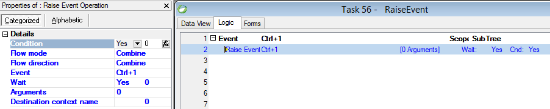

Raise event operation with wait = Yes migrated to Invoke() method
Raise event operation with wait = No migrated to Raise() method
System event
Invoke((Keys.Control|Keys.D1)); Internal event
Raise(Command.GoToNextControl); Public event
Invoke("MuPublicEvent"); User event
Invoke(MyUserEvent); User event with wait = No
Raise(MyUserEvent); With arguments
Invoke(MyUserEvent, vNumber1, 25); With Destination context name
RaiseOnContext("Main", MyUserEvent, vNumber1, 25);